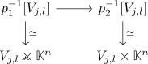

isomorphism of vector bundles and fibrewise isomorphism
Proposition
Let $p_i: E_i \rightarrow B$ be a topological vector bundles for $i \in \{1,2\}$ and $\varphi: E_1 \rightarrow E_2$ a morphism of topological vector bundles TFAE:
- it is an isomorphism in the category of topological vector bundles
- it is fibrewise a vectorspace-isomorphism
Proof
1) $\implies$ 2)
follows from definition.
2) $\implies$ 1)
note that the map is continuous and a Bijection. Then consider the set theoretic inverse map
\begin{align*}
q^{-1}: E_2 \rightarrow E_1
\end{align*}
we have to show that it is an open map (as it is fibrewise linear, since the inverse of a linear map is again linear)
Choose trivializing covers $U_j^i$ and consider the $V_{j,l} \coloneqq U_1^j \cap U_2^l$ as trivializing cover for both bundles. for that we note that

then since an vectorspace-isomorphism is a homeomorphism, we conclude that the bottom map is a product of homeos, hence also a homeo.